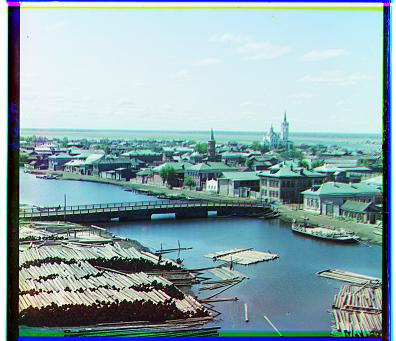

Colorizing the Prokudin-Gorskii Photo Collection
Project Overview
The goal of this project was to align three seperate color channel images (BGR) captured on glass plates from the Prokudin-Gorskii collection in order to produce a single colored image.
Getting Started
The initial images in the collection were captured using three separate shots for each image, one for each color channel (Blue, Green, and Red). These images were then stored as glass plate negatives. The three seperate plates we're dealing with are stored with pixel intensity values, ranging from 0 (darkest) to 255 (lightest). Here is what they look like:


Naive Approach
Because we're using blue as our basis for alignment, the best way to approach this problem is to slide the green and red channels across the x and y axes for some specified window, calculate some metric between the green/red plate and the blue plate, and repeat this until we find a minimum or maximum (depending on the metric). We can then align the green and red plates using the x and y shifts that optimized our metric. For example, below is a before and after of the smaller images, shifting over a window of [-15, 15], using the L2 norm and NCC (since the images are small enough the L2 and NCC norm result in similiar shifts), and finding which values minimize the norm between the two images.
| Aligned Image | Green Alignment | Red Alignment | Alignment Method |
|---|---|---|---|
 |
(-1, 1) | (-1, 7) | L2/NCC |
 |
(0, -6) | (1, 9) | L2/NCC |
 |
(2, 3) | (3, 6) | L2/NCC |
Pre-Processing: Cropping
Our alignment is meh right now. It works well on two of them but not so well on one of them. The harsh borders might be throwing something off when minimizing over the L2 norm since those pixels are close in intensity to eachother. When aligning, I decided to crop the image by about 5% which was found by playing around with different cropping amounts. Here is an example of a cropped image:

Before Crop
After Crop
After pre-processing our image, we can return to our naive implementation and see the new best alignments.
| Aligned Image | Green Alignment | Red Alignment | Alignment Method | Time (sec) |
|---|---|---|---|---|
 |
(2, 5) | (3, 12) | L2/NCC | 1.08 |
 |
(2, -3) | (2, 3) | L2/NCC | 0.94 |
|  | (2, 3) | (3, 6) | L2/NCC | 0.80 |
Image Pyramid
Unfortunately, our naive implementation takes too long and isn't very good when working with large images. We can only find offsets between -15 and 15. The idea behind an image pyramid is to downsample our image, align, and then return to our original image with the shifts scaled. Here is an example of the image pyramid for emir, of height 3, scaling down by a factor of 2.
Pyramid at level 0 (full scale)

Pyramid at level 1
Pyramid at level 3
Pyramid at level 5 scaled up to view pixels
Aligning Using Pyramid Speedup
The nice thing about working with smaller images is that we can search over a wider window at smaller resolutions. Then at larger resolution, we can scale those alignments up, turn down the window over which we scan, and search around the scaled up alignment. This allows us to narrow down our window, speeding up our process, while still retaining a relatively good alignment.
For example, lets say we are scanning over a window of 30 at the smallest resolution and find an alignment located around (7, 10). Scaling that up, we would now want to search around (14, 20) and scan over a window of size 15.
When implementing the pyramid speedup, I decided to include a lot of hyperparameters that included the scale in which to downsample, the height of the pyramid, the initial size to search at the smallest image (which will be scaled down by the scaling factor at each level), crop percentage, and the metric we're using to optimize. I found that the best results for both small and large images came from using a scale of 2, a height of 3, an initial size of 30 to search around, and 95% crop. The metric was hard to pin down. Here is an example of using the L2 or NCC norm to align the image. Using this process takes around 7 seconds compared to >1 minute for our naive implementation.
| Aligned Image | Green Alignment | Red Alignment | Alignment Method |
|---|---|---|---|
| (23, 49) | (30, 73) | L2/NCC |
Returning to the Metric
It appears that using the L2 and NCC result in similiar alignments. Here is me trying out the L1 norm after hours of banging my head against a wall, and finding that it aligns large images really well! Perhaps it works so well because at higher resolutions, its more robust to pixel intensity values.
| Aligned Image | Green Alignment | Red Alignment | Alignment Method |
|---|---|---|---|
 |
(24, 50) | (41, 104) | L1 |
Returning To Our Initial Images With Pyramid Speed-up
I decided to return to the initial images we aligned using our naive implementation. Would using the pyramid speedup with the L1 norm work just as well? It turns out one of the images didn't align so well:
| Aligned Image | Green Alignment | Red Alignment | Alignment Method | Time (sec) |
|---|---|---|---|---|
| (2, 5) | (0, 8) | L1 | 0.17 | |
| Luckily, I can just change the metric we use to align. | ||||
 |
(2, 5) | (3, 12) | L2/NCC | 0.13 |
So for smaller images, its better to use the L2 norm while for larger images it is better to use the L1 norm. We can see that our pyramid implementation speeds up our process by almost 6x!
Results
Here are all of the results using the Pyramid Speed-up
| Name | Aligned Image | Green Alignment | Red Alignment | Alignment Method |
|---|---|---|---|---|
| Cathedral | |
(2, 5) | (3, 12) | L2/NCC |
| Monastery | |
(2, -3) | (2, 3) | L2/NCC |
| Tobolsk | (2, 3) | (3, 6) | L2/NCC | |
| Emir | |
(24, 50) | (41, 104) | L1 |
| Harvesters |  |
(17, 60) | (14, 124) | L1 |
| Self Portrait | (26, 77) | (35, 174) | L1 | |
| Melons |  |
(10, 81) | (14, 178) | L1 |
| Italil |  |
(21, 38) | (35, 76) | L1 |
| Lugano | (-15, 41) | (-28, 92) | L1 | |
| Church |  |
(4, 25) | (-4,58) | L1 |
| Icon | (14, 41) | (22, 90) | L1 | |
| Siren | (-6, 54) | (-24, 101) | L1 | |
| Three Generations | (11, 53) | (9, 112) | L1 | |
And some photos of my choosing |
||||
| Railroad | (-6, 28) | (-18, 108) | L1 | |
| Trees | (-16, 46) | (-50, 115) | L1 | |
| Rainbow | (8, 66) | (5, 141) | L1 | |